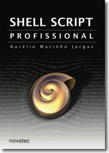

|  | LANÇAMENTO! Livro Shell Script Profissional 480 páginas. O sucessor da apostila. Prepare-se para uma imersão em shell. |
Pesquisa de opinião
| Item | FRACO | MÉDIO | BOM |
|---|---|---|---|
| Apresentação gráfica | 5% | 35% | 60% |
| Didática | 1% | 5% | 94% |
| Exemplos | 2% | 17% | 81% |
| Abrangência do conteúdo | 3% | 29% | 68% |
| Qualidade do conteúdo | 1% | 2% | 97% |
| Quantidade de conteúdo | 1% | 45% | 54% |
| Utilidade do conteúdo | 1% | 2% | 97% |
| Seu conhecimento em Shell melhorou após a leitura da apostila? | - | não 1% |
um pouco 5% |
médio 31% |
bastante 63% |
| Você se sente seguro para escrever PROGRAMAS em Shell? | - | não 2% |
- | mais ou menos 32% |
sim! 66% |
| Você usou/vai usar no seu trabalho o que aprendeu na apostila? | não sei 10% |
não 5% |
não trabalho 1% |
sim, pouco 22% |
sim, muito 62% |
| No final das contas, valeu a pena pagar pela apostila? | - | não 2% |
- | - | sim 98% |
Comentários dos leitores
- Alexandre Moraes da Silva, Janeiro de 2004
- Como ainda estou estudando Linux (e sei que isso não vai acabar nunca!) a apostila me deu um conhecimento para interpretar muitos dos scripts que existem na inicialização do sistema. Cheguei a escrever alguns pequenos scripts para testes dos conceitos e para automatizar algumas tarefas simples (compilação gcc). Acredito que a prática é que trará bons resultados, mas sem dúvida o material foi de grande ajuda.
- Fagner Gonçalves, Janeiro de 2004
- Com o apoio da apostila, fiz um sistema em shell para monitoramento de cluster. Serviu como trabalho de graduação, e bem recebido pela banca examinadora. De quebra, está em produção desde Out/03 e servindo como base para estatísticas e monitoramento dentro do nosso departamento. Nunca travou. (até o momento) Muito bom seu trabalho Aurelio. Parabéns.
- César Brod, Janeiro de 2004
- Acho que não sou muito bom da cabeça. Se um determinado assunto técnico me interessa, mesmo que não seja algo que necessariamente uso no meu dia-a-dia, procuro ler a respeito. Não com aquela obrigação profissional, mas com aquela paixão de quem lê um romance. Uso shell há muito tempo, afinal, comecei a usar o Linux em 1993, e lá a tela preta ainda era muito mais fundamental do que hoje. Escrevo um scriptzinho aqui, outro ali. O poder do Shell me encanta, e no Brasil temos a sorte de termos mestres como o Júlio Neves e o Aurelio Marinho Jargas. Ganhei de presente a apostila do Aurelio, dele mesmo, e autografada! Li numa sentada só, no avião entre Curitiba e Porto Alegre. Depois voltei à algumas páginas e li de novo. Hoje ela está aqui, junto a outras preciosas referências, ao lado de raridades como o Lion's Commentary on Unix. O legal é que, para quem teve a oportunidade de conhecer o Aurelio, ler a apostila é como conversar com ele, e como conversar com ele é muito bom, ler a apostila também é. Dá para ler e meio que matar a saudade dele ao mesmo tempo.
- Georger Rommel Ferreira de Araújo, Janeiro de 2004
- Utilizei o que aprendi na aspotila para compreender e melhorar os scripts do ERP da empresa, que roda em ambiente AIX. Não escrevi programas novos, mas os ensinamentos me ajudaram enormemente a dar manutenção nos existentes. O trabalho está muito bom. Há Pequenos deslizes de ortografia e gramática, que não tiram o brilho da obra. Por natureza e necessidade, a apresentação gráfica é simples, simples a ponto de ser minimalista. Convém dar um pouco mais de atenção à parte gráfica: uma fonte mais bonita, tabelas mais elaboradas, etc.
- Ricardo Reiche, Janeiro de 2004
- Oi Aurelio, muito bom saber das novidades. Parabéns mais uma vez. Pode ter certeza que estou sendo sincero. O seu curso foi realmente um divisor de águas. Hoje me sinto *mais próximo* de shell script do que estava a 6 meses. Como seu curso não se repetiu, ficou a sensação de que realmente valeu muito a pena ter passado uma semana em Sampa estudando Shell como o *papa do shell*, sem gozação! Vale dizer: do zero!
- Rodrigo Vilaça de Queiroz, Janeiro de 2004
- Fiz vários programas, na maioria pequenos programas que me ajudaram no dia a dia. Só para exemplificar fiz um programinha usando os conceitos do Capítulo 5 sobre como extrair as manchetes do site de notícias yahoo e usei-o para extrair dados da página do Diário Oficial do Estado de Pernambuco. Antes tinha que entrar em cada parte e dar um find para achar a palavra que estava procurando. Agora com o script passa uma palavra e ele procura num período determinado de Diários Publicados me informando em qual dia foi publicado algo referente sobre aquele assunto. Achei a apostila sensacional! Pena que ela me deixou com um gostinho de quero mais. Queria que ela tivesse falado mais sobre Parsers e mais sobre CGI, com mais exemplos sobre este temas. Mas sei que se fosse tratar de todos os assuntos sobre Shell seria uma Enciclopédia e não uma apostila! Muito obrigado pela transmissão de conhecimento de uma forma tão didática e clara.
- Clayton Kendy Nakahara Passos (a.k.a NetStaRt), Janeiro de 2004
- A apostila está excelente, é um material escrito com uma linguagem clara, simples, objetiva e didática, assim como o Guia de E.R. Como toda produção é necessária apenas uma pequena revisão. Nada que venha comprometer o conteúdo técnico. Comprei o material de ShellScript e ganhei de brinde uma dedicatória que pode ser visualizada em http://ckendy.lintch.com.br/vidadenerd.php
- Jonathan Augusto Sant'ana Martelo, Janeiro de 2004
- Agora que estou conseguindo aprender um pouco mais sobre o Win2k Server, já senti a necessidade de escrever alguns programas em shell através do Cygwin. Bom, vou aproveitar para escrever que se a instalação do Speedy lá em casa der tudo certo, pretendo estar publicando um conteúdo sobre Informática. E por fim, gostaria de agradecer a todas as pessoas que contribuem, de alguma forma, para que as pessoas não reprimam suas idéias e sonhos, ajudando-as a executá-los tornando-os realidade (como por exemplo: você Aurelio!).
- Jose Brandao, Janeiro de 2004
- Quero usar a apostila pra fazer uns programas paralelos usando pbs+shell. Ainda não a usei muito, mas resolvi comprá-la porque o índice tinha muitas coisas que eu estava querendo aprender a usar. Valeu por ter mandado uma das últimas pra mim!
- Andre Murbach Maidl (aka espiga), Janeiro de 2004
- A apostila é muito boa, mas o melhor são os exemplos e os exercícios. Dá pra pegar uma base bem boa.
- Everson Santos Araujo (aka -NoBIOS-), Janeiro de 2004
- Com a ajuda da apostila fiz programas de uso interno na empresa, automatização de criação de usuários, Sistemas de verificação de banco de dados, verificação de processos rodando e início dos vitais que pararam, replicação de dados, replicação de usuários em sistemas heterogêneos. Alguns destes não foram feitos por ter me inspirado na apostila, mas por ela ter me tirado algumas dúvidas que me possibilitaram realizá-los. Eu gostei muito da apostila, tem um bom contéudo, mas senti falta de exemplos. Acho que posso me chamar de auto-didata, e para pessoas assim, exemplos facilitam o entendimento da explanação de uso. Acho que a apostila também poderia ganhar uma aparência mais limpa e bonita. A organização dela já é boa, porém poderia melhorar um pouco também com um sistema de índice melhor (isso é pro caso de se fazer o livro). A leitura também me fez sentir mais seguro para responder dúvidas na lista shell-script, a qual eu apenas lia sem me envolver no processo.
- Lucas Eduardo de Melo Cotta, Janeiro de 2004
- Já uso shell a muito tempo e gosto muito de ter aonde recorrer e já recorri a seus scripts, sites, programas e agora a sua apostila sempre! Se eu falar mais você vai ficar inchado demais e vai estourar!
- Ataliba de Oliveira Teixeira, Janeiro de 2004
- A leitura da apostila no momento realmente serviu para aprimorar os meu parcos conhecimentos em Shell, para que a partir daí eu passe a criar algum 'programa' realmente em Shell. O que eu criei, a partir da leitura da apostial foram realmente alguns programinhas para criação de arquivos .h em programas C que eu estou fazendo, a exemplo do gawnuts, que é um servidor de talker, ainda em licensa Proprietária, que estará sendo migrado, dentro de algum tempo, pra uma licensa GPL. O programa de Configuração se encontra na GPL. O projeto pode ser acessado via http://gawnuts.codigolivre.org.br e outros programas de minha autoria também podem ser acessados no endereço http://www.ataliba.eti.br Bom, cara, não preciso dizer muito sobre a qualidade do seu trabalho em Software Livre. Desde que conheci sua página, comecei a deixar um pouco a interface gráfica e me interessar, e muito pela programação e o uso do Shell. Posso dizer, sim, que esta apostila que tive a chance de ler, foi e vai ser uma grande fonte de consulta durante toda a minha vida profissional. A qualidade do texto até surpreende em alguns momentos e sem dúvida, é um grande material. Já está aqui, guardado em minha estante de livros :-) Espero, sem dúvida, que você continue nos brindando com a qualidade do seu trabalho e que, nós, possamos, em algum momento remoto da história, nos esbarrar por aí :-) Parabéns e sorte :-)
- Sérgio Roberto Silva da Cunha, Janeiro de 2004
- Ótima iniciativa, não conheço nenhum material em português da mesma qualidade.
- Pierre Andrade Freire, Janeiro de 2004
- É com enorme prazer que retorno o seu e-mail, sua apostila para mim foi fantástica, eu aprendi muita coisa sobre shell scripts e digo mais, saber shell script foi fundamental para o meu trabalho. Hoje estou em uma empresa de soluções em Linux e a toda hora me vejo a volta com scripts complicados, e a segurança que a apostila me deu, foi enorme. O interesse aliado ao ótimo material apresentado com certeza são as chaves para o aprendizado do shell. Como te disse em outro e-mail, quando fiz um teste e me deparei com o dialog eu disse: A apostila do aurelio foi uma benção! Enfim, gostei muito do material e agradeço a você por ter me ajudado na época, eu não podia fazer o curso de shell e você me deu a apostila de presente, obrigado de verdade, sou muito grato a você. Em relação a apostila, didática, conteudo, eu gostei muito, merece um 10.
- Daniel Lobato Duclós, Janeiro de 2004
- A apostila me ajudou principalmente coisas internas no serviço, para lidar com os servidores de mail que temos. Deu vontade de retomar um programa que abandonei. É um instalador de qmail-toaster, ou seja, a tranqueirada toda pra ter um servidor de email completo (POP, SMTP AUTH, webmail, antivírus, IMAP, relatórios, etc) Um dia eu chego lá ;) http://www.cybershark.net/~daniduc/pub/SCRIPTS/qmail_toaster_mysql.sh Excelente trabalho, como eu esperava. Uma das coisas mais difíceis que tem é atender a expectativas altas, e a sua apostila superou as minhas. E elas eram altas, pois acompanho seu trabalho há algum tempo. Sem puxa saquismo, mandou bem ;)
- Paulo Henrique da Silva, Janeiro de 2004
- Usei shell no trabalho, porém sou novo em administração de sistemas Unix. Como estou começando faltou uma boa idéia de uso que já não estivesse pronta. :) Mas a apostila foi muito útil no dia a dia para criação de scripts.
- Anamim Thuler Schuwarte, Janeiro de 2004
- Ainda não tive tempo de estudar a apostila toda, só dei uma primeira olhada, comecei a estudar e achei ela muito boa. Infelizmente não tenho como aplicar isso no trabalho, mas quero aprender na esperança de um dia produzir algo livre e útil. Se acontecer meus agradecimentos irão para você, se eu nunca aprender nada e/ou não conseguir produzir nada de útil, a culpa é minha mesmo. Não escrevi nenhum shell ainda, mas o que falta é tempo ... Você poderia escrever um livro. 'O Método Aurelio para desenvolvimento de software livre para homens empregados e casados'. Na boa, qual o segredo, mestre Verde? Fica a sugestão de talvez escrever uma apostila introdutória, já apresentando o script shell de maneira profissional, como você faz nessa apostila atual. A apostila é muito boa. Parabéns.
- Marcio Roberto Arjonas Garcia, Janeiro de 2004
- Utilizei muito a apostila para auxiliar no gerenciamento dos servidores da empresa (sou administrador), fazendo scripts para backup, contagem de tráfego, gerencimento de espaço em disco, etc ... Achei muito boa a apostila e com certeza se ela existisse em forma de livro já teria comprado, muito boa mesmo, está de parabéns!
- Juliano Dorneles dos Santos, Fevereiro de 2004
- Estou no aguardo do recebimento de equipamento novo, então vou portar todo o processo do meu trabalho para o sistema Linux (trabalho com restauração fotográfica) ... Vou acrescentar ao conhecimento que já tinha todos os novos conhecimentos e criar um sistema de cadastro de clientes e criação de mala-direta ... tudo em shell ... Tenho somente uma coisa a dizer ... parabéns pelo teu trabalho, tanto a apostila sobre shell quanto ao livro sobre expressões regulares. Ambos contribuem muito para o desenvolvimento dos profissionais que utilizam o Linux. Sucesso !!!
- Luciano Oliveira Bonifácio, Fevereiro de 2004
- Com a apostila aprendi a teoria que me faltava em relação aos comandos. Executava um comando com vários parâmetros, sem saber exatamente o porque. E também seus exemplos, que mostra necessidades do dia a dia, são de grande valia e fácil compreensão. Apesar de não trabalhar no dia a dia com ambientes unix, com certeza depois da leitura de sua apostila, clareou muita coisa. Parabens!!
- Reginaldo Alves Ribeiro, Fevereiro de 2004
- Eu não trabalho com a área técnica, comprei a apostila somente por segurança, para se um dia eu precisar. Porém, até onde eu consegui ler, em função do tempo, ela é de excelente qualidade.
- Rodolfo Daniel Gross Villanova, Fevereiro de 2004
- Parabéns pela 'cria'. Ela está evoluindo e se aperfeiçoando com maturidade. Vou querer adquirir o volume da 1a. edição quando lançares o livro. Será interessante se na próxima versão entrares detalhadamente no campo do tratamento de vetores e pilhas. São técnicas que não se utiliza com freqüência, mas há muitos truques e 'manhas' que podem ser utilizadas para otimizar código ou resolver determinados problemas. Exemplos de utilização serão muito úteis.
- Augusto Campos (aka brain), Fevereiro de 2004
- Eu gostei da maneira como você coloca o texto, de forma coloquial. Os exemplos são práticos, dá para entender a razão de fazer de uma maneira e não de outra. Acho que o formato A4 não é o ideal para livros de consulta - ocupa espaço demais na mesa, e ainda dá a impressão de ser pouco conteúdo, porque fica 'fino'. No mais, o que está lá está excelente. Estes são meus 2 centavos!
- Pablo José Lopes Torres Fernandes, Fevereiro de 2004
- Parecia que cada assunto da apostila solucionava algum problema ou idéia. A apostila foi escrita de forma a estimular a prática do conhecimento obtido, criando novos programas e nos deixando mais apaixonados ainda pela linguagem. Enquanto lia a apostila, fui capaz de desenvolver um programinha musical envolvendo cores, som e outros recursos do shell que utilizo. http://cltfc.sites.uol.com.br O melhor de tudo é a intimidade obtida com a linha de comando, e as mil e uma soluções que a partir de então, o leitor se toma posse. Seja o que precise, interface WEB, acesso a banco de dados SQL, interface de janelas para modo gráfico, mesma interface gráfica para modo texto, texto, aplicações cliente/servidor (ssh-keygen), utilizar de portas, ..., ..., ... Parece que shell é dono de quase todas as soluções, e se alguém fala que o linux é poderoso, tenho certeza que é PRINCIPALMENTE pela facilidade que o shell e o conjunto de programas para modo texto dá.
- Daniel Soares (aka buda), Fevereiro de 2004
- Gostei muito da apostila! O texto é de fácil compreensão, totalmente didático e os exemplos complementam bastante o aprendizado. Já tinha experiência em shell mas na verdade nunca fui programador. Faço alguns scripts para facilitar minha vida de administrador de sistemas, mas nada assim tão profissional. Com os conceitos abordados na apostila, a qualidade e, principalmente, a documentação dos meus novos scripts (ou programas, como a apostila aborda), vão ficar, com certeza, muito melhores.
- Marcos Sungaila, Março de 2004
- Uma série de exemplos dos enviados junto com a apostila me levaram a criar pequenos scripts para gerenciamento de usuários, como criar usuários em lote (chamei de mkusers), lista todos os membros de um grupo (meu list-group - neste eu me aventurei um pouco com awk junto para fazer os filtros por campo do passwd). Em cima de todos os scripts criados (11 para gerenciamento de usuários e samba), montei um menu que aciona um ítem de cada vez. São scripts pequenos, entre 5 e 15 linhas quase todos, mas são bem úteis. Como o seu material surgiu com fins de aula presencial, acredito que o conteúdo é condizente com um professor em sala de aula. Infelizmente para se tornar um material didático, vendido separadamente acho que os tópicos deveriam ser abordados de forma mais direta, com exemplos direto no corpo do material. Os exemplos fora (scripts) servem para os testes, mas fica um pouco confuso sobre o que procurar ou em qual arquivo achar um exemplo. Valeu Aurelio, seu material é muito bom, parabéns.
- Daniel José Viana, Março de 2004
- Estou desenvolvendo um script para configurar joysticks na porta paralela, chamado PAJÉ (para o kurumin). Além disso, pretendo melhorar um script que fiz há algum tempo atrás (uff. ja tem mais de um ano) chamado dig, que usa o wvdial pra discar pros provedores de internet gratuitos brasileiros. PAJE - www.vespanet.com.br/~danjovic/paje DIG - www.vespanet.com.br/~danjovic/dig Sua apostila de shell avançado é excelente até para quem, como eu, ainda mal conhece básico. Um dos pontos mais importantes, e que você deu prioridade, é a documentação do software. Quanto à apresentação da apostila impressa, também acho que o ideal é que fosse em tamanho livro mesmo (1/2 A4). Já a versão PDF poderia vir alternativamente em formato para impressão tipo livro. Aí bastava imprimir em face dupla, cortar ao meio e encadernar. Quem sabe até a apostila pudesse incluir um exemplo de script que fizesse isso, usando ps2pdf, psbook/psnup. (com opção de impressão dupla face ou de páginas pares + ímpares).
- Cláudio César Domingues da Rocha, Março de 2004
- Inspirado pela apostila, estou desenvolvendo um programa, mas é apenas um instalador. Pois estou desenvolvendo o seu corpo com mysql e php, um simples programa nerd para o comércio de locação. A apostila foi e está sendo muito útil para mim, pois ela é o meu guia, digamos meu livro de cabeceira.
- Francisco Aparecido da Silva, Julho de 2004
- Fiz alguns scripts, por exemplo um que lê a saida do comando last, filtra alguns dados de conexões e grava em uma página HTML.
- Eri Ramos Bastos, Julho de 2004
- Inspirado pela aspotila, criei o http://www.linuxman.pro.br/radius/ O Aurelio é o cara. ;-)
- Braulio dos Santos Junior, Julho de 2004
- Criei vários scripts complexos para clientes, como alguns backups extremamente customizados, ou mesmo geração de relatórios extraindo informações de logs do sistema. Hoje, para dar um exemplo, usando apenas bash-scripting (e um pouquinho do expect), eu tenho o reset automático do meu roteador adsl, seguindo de login automático junto à operadora, o acerto do ip junto ao dyndns, o acerto do ip junto ao meu dns oficial (em outro servidor), e a sincronização de todos esses dados junto aos dns secundário e terciário. A verificação e eventual intervencao na conexão de vpns com meus clientes tb é feita de forma automática, assim como a verificacao do funcionamento de seus bancos de dados. A Seer (http://www.seer.com.br) deu um salto na qualidade de seus atendimentos. Parabéns pela iniciativa, o material é de elevadíssimo nível, assim como a didática. Valeria a pena passar esse material para uma pessoa especializada em publishing para melhorias na ortografia e visual, mas o conteúdo é perfeito.
- Leandro Soares da Costa, Julho de 2004
- Inspirado pela apostila, fiz um programa chamado ipadmin, feito em shell com CGI. A função dele é cadastrar máquinas via Web deixando-as cadastradas no DHCPD e DNS.
- Osvaldo Santana Neto, Julho de 2004
- Inveja. Foi isso que eu senti ao terminar de ler os primeiros capítulos da apostila. Porque inveja? Porque eu gostaria de conseguir escrever com a simplicidade, clareza e didática com que você escreve.
- Edir Dumaszak, Julho de 2004
- De forma simples e direta, a apostila explica como desenvolver Scripts de qualidade. Ela esta sempre comigo, quando desenvolvo Shell Scripts.
- Rodrigo Pereira Telles, Julho de 2004
- Utilizei a parte de comentários e os implementei nos meus scripts/programas.
- Caio Begotti, Julho de 2004
- Na verdade o meu desejo por Regex e Shell Scripting cresceu bastante quando eu fui criar um "changelogger nerd" em shell script, com código "bonito" e fazendo interface em Dialog. Com a apostila eu pretendi fazer as coisas melhores e do Jeito Certo (tm) :) Ele se chama Femtologger mas não está em nenhum lugar ainda, talvez pelo temor de não achar que já sei fazer algo "decente" em Shell: http://caio.ouie.org/wip/femtologger_preview.png. Cria notícias, avatares, código XHTML 1.1 e CSS 2.1 válidos, exporta seção de links pra XBEL (XML) e notícias pra RSS. Todo em shell e joiado como você diz :) No momento que escrevo isso, a impressora está berrando ao meu lado imprimindo a apostila em formato de livro pra ir fazer companhia ao livro de Expressões Regulares na minha mesa no trabalho :) Eu sou um dos que preferem a coisa pra ler com prazer e calma, em papel, e que irá aguardar ansioso pelo livro. A apostila de Shell já virou pau-pra-toda-obra nas tarefas aqui e me salva bastante quando a cabeça falha, além de ter ensinado dicas valiosas que servirão pra eu pular do eterno Dialog para o Kommander, e brincar com Shell, Regex e interfaces QT sem stress, por que Shell comanda e é o que há :) Parabéns cara!
- Henrique Brancher Gravina, Agosto de 2004
- A apostila me inspirou a melhorar meu ripador-semi automático e transformá-lo em automático e mais algumas melhorias que vou fazer assim que surgim um tempinho! http://www.solis.coop.br/~henrique/cd3mp3.html A apostila de shell script é muito boa, inclusive como referência para quando você não se lembra de algum comando mas sabe que ele existe. Gostei muito da organização dela e da ajuda que ela dá ao usuário para criar códigos limpos e reutilizáveis. A apostila é muito boa!
- Rafael Donelli, Agosto de 2004
- Achei o conteúdo bastante abrangente, mesmo que substancialmente pouco aprofundado por ser uma apostila. Mas como não fui no curso, então tenho um bom resumão do que tem e do que pode! Outra coisa que tenho que dizer é que a apostila é massa no sentido de dar dicas não somente "shellescas", mas também para "rotinas administrativas" e "motivacionais" do programador, como é o caso da aula 2. Só por causa disso também criei coragem para escrever meus manuais de sistemas com "HTML" e usar o txt2tags + HTMLDOC, deixando meu mundo um pouco mais "livre"! ;-D Os exemplos + arquivos parecem estar de acordo com o propósito do negócio: pitadas de "shell avançado!"
- Fabio Jesus Augusto, Abril de 2005
- Só tenho a agradecer pela qualidade do trabalho!
- Hermes Nunes Pereira Júnior, Abril de 2005
-
Estou usando o conhecimento adquirido para otimizar alguns
procedimentos onde trabalho. Dentre os programas que fiz, posso destacar:
- Verificação/comparação de arquivos para backup;
- Criação de páginas .php dinamicamente a partir de dados do ambiente e do usuário;
- Procura de expressões (informados pelo usuário) em arquivos de log.
- Edersom Angelo da Silva, Abril de 2005
- Fiz vários programas inspirado pela apostila. Eu estruturei toda a minha rede de forma que eu pudesse ter o controle total e absoluto de qualquer host a partir do servidor, meus shell-scrips me ajudam muito na administração do sistema aqui onde eu trabalho. Quanto a apostila, meu show de bola, muito boa, eu sou um kara bem preguiçoso, confesso que não li muito a apostila em si, mas o que eu li e vi foi aplicado de forma muito útil..., e se eu que mesmo dando "pouca atenção" aos estudos aprendi pra kct, imagino uma pessoa que devora textos no café da manhã!!!!!
- Rubem Alves Figueredo, Abril de 2005
- Inspirado pela apostila fiz scripts de automatização de tarefas no Slakware, cadastro de users e login.
- Eduardo Oliva Barruzi, Abril de 2005
- Fiz programas de backups internos e remotos via ssh. E um sisteminha de sincronização de mensagens de e-mail, recebo e-mails na empresa e quando ligo o computador em casa é tudo sincronizado e copiado pra ficar tudo igualzinho. Parceiro, a sua apostila é muito boa, pois trata itens que para quem trabalha com Linux e não os conhecia, é uma mão na roda :). Eu gostei muito da parte do "Dialog", pois como uso Slackware, acabei entendendo muita coisa de como é feita a instalação. Continue assim e parabéns.
- Américo Munhóz Junior, Abril de 2005
- Parabéns pela qualidade da apostila. Atualmente meu principal objetivo é entender o funcionamento dos scripts de inicialização do Linux. Apesar de estar na trilha dos computadores há mais de 30 anos (desde a época do Processamento de Dados com cartões perfurados....) acredito que o melhor caminho para realmente desenvolver tecnologia nacional é o Software Livre.
- Fabio Cesar Prado Miguel, Abril de 2005
- Inspirado pela apostila eu desenvolvi um software para fazer controle de Help Desk em shell
- Fábio Henrique Pereira Guimarães, Abril de 2005
- Eu já programava em shell script, então após a leitura da apostila eu apenas melhorei ou fiz modificações que limpassem o código dos meus programas antigos. A apostila é realmente um material imprescindível para qualquer administrador de servidores Linux, para tirar dúvidas e pegar idéias, os que não tem pelo menos um scriptizinho feito de "própio punho" para automatizar uma tarefa qualquer do servidor, pode ser considerado: "Administrador Receita de Bolo". Se sair um Livro eu compro com certeza. Parabéns ao Aurelio e todos que cooperaram com esta obra.
- Luiz Roberto Ferreira, Abril de 2005
- A apostila me ajudou a "refazer" alguns scripts já prontos, ficando mais leve e com menos linhas. Achei falta de mais exemplos dos comandos citados. Vários outros comando bem úteis também não está na apostila, ao qual usamos muito em scripts. Porém recomendo a sua apostila para os meus colegas que usam UNIX/Linux. Parabéns pelo seu trabalho e com certeza o seu livro será um sucesso!
- Antonio Carlos Mano, Maio de 2005
- Trabalho com Unix há 17 anos, sempre programando em linguagens como C, COBOL e Informix 4GL. Adoro esse sistema operacional, pois mesmo após tanto tempo sempre aparece algo novo para aprender. O shell sempre foi um mistério para mim, ou melhor só usava o básico. Com o surgimento do Linux e sua utilização aqui na empresa onde trabalho fiquei mais interessado em utilizá-lo melhor, e sua apostila me ajudou muito nisso. Recentemente tive que montar um shell script para compilar programas em Informix 4GL, que, além de compilar os programas, tinha também que compilar suas telas, arquivos de help, link-editá-los e transferí-los para máquinas remotas via scp. Graças à apostila isso foi possível, e o resultado foi um script de aproximadamente 800 linhas. Recomendo essa apostila a todos que se interessam por Unix, Linux e programção em shell, pois sua linguagem é clara e simples, apesar do conteúdo ser complexo e abrangente.
- Claudio Sá de Abreu, Setembro de 2005
- Faço muitos programas em shell, mas a maior parte do background vem de várias apostilas, incluindo essa. Acho que a apostila careceu de programas mais complexos. A apostila é boa, mas acho que valeria a pena a criação de uma versão "avançada".
- Lauro Soares Giberti Gatz, Maio de 2006
- Fiz vários scripts para automação de processos de meus servidores, o conteúdo da apostila é ótimo eu só achei que poderiamos ter mais exemplos. Bem, não tenho muito a escrever, só mesmo a agradecer pelo excelente nível da apostila e pelo benefício que ela me proporcionou. Parabéns!
- João Júlio Salvatti Neto, Maio de 2006
- No lugar do bash, coloquei um programa em shell para os técnicos do ISP em que eu trabalho possam administrar as contas dos usuários. Possam adicionar, remover, trocar senha, verificar o status do usuários (ativo, bloqueado), entre muitas outras coisas. Precisei para isso da apostila de shell que eu comprei, e dos tutoriais de awk e sed, que também são muito bons!!
- Ederson da Silva Rodrigues, Maio de 2006
- Fiz dois programas que pequei os conhecimentos com a apostila um que usa autenticação de gateway (samba com o squid) e outro de backup squid e varias tarefas que facilitam minha vida usando a programação em shell. A apostila me serviiu bastante melhorou meus conhecimentos e me ajuda muito a fazer tarefas antes que eu tinha que fazer manualmente.
- Guilherme Ulbrich, Maio de 2006
- A didática é a melhor coisa da apostila, o seu estilo de escrita me agrada. Faz a leitura ficar leve, e até as coisas mais complicadas ficam mas fáceis de serem "digeridas". A apostila é muito boa mesmo. Até mais ou menos um ano e meio atrás eu era totalmente leigo em shell, daí, seguindo a recomendação do Aurelio, comprei o livro do Júlio, debulhei ele, e quando eu senti que estava melhorando no shell, a apostila do Aurelio me deu a segurança que me faltava para trabalhar com shell profissionalmente. Sinto que passei de nota 3 em shell para nota 8... Obrigado Aurelio, continue assim, sempre incentivando os outros. E isso não é puxa-saquismo, é gratidão mesmo.
- Mário Felipe Rinaldi, Maio de 2006
- Cara, muito boa a apostila....Se pudesse eu pagava 40 por uma edição impressa (de preferencia da Novatec! :P)
- Samuel Celestino Bretas, Maio de 2006
- Eu trabalho com web, meus projetos nao estao sendo necessiariamente escritos em shell. Fiz uns programas mas rodo internamente em meu micro, uso pessoal. Mas a apostila em si trouxe muitas coisas em relacao a minha programacao. Sim ela realmente ajuda, pode ser utilizada no dia-dia. Vale a pena adquiririr a apostila do Aurelio.
- Rodrigo Domingues Chacon, Maio de 2006
- Criei um instalador (.tar.gz/.tar.bz2) que usava KDialog para a interface e durante o desenvolvimento voltei algumas vezes na apostila para consultas rápidas, mas acabei nunca divulgando este instalador e ficou aqui o código (utilizo de vez em quando =D). A apostila tem ótimo contéudo didático e serve para ajudar, introduzir e inspirar novos programadores em Shell Script. Ótima para consultas rápidas por conter um conteúdo bem completo e bem explicado. Resumindo: valeu cada centavo e já indiquei para muitos seu site e apostilas.
- Altair Alves Costa, Maio de 2006
- Achei sua apostila muito boa. Apesar de me interessar pelo assunto, ainda não pude me dedicar com afinco. Normalmente quando me interesso por um assunto, procuro logo as fontes de informação para estudo, mesmo que não comece logo.
- Jair da Silva Peixe Filho, Maio de 2006
- Fiz um programa para uso pessoal, para automatizar a instalação de programas no slackware, pois ele é meio fraco neste ponto. Mas ele faz o seguinte, eu tenho uma lista com os servidores do slack, e o programa os lê, e verifica quais estão de pé, depois ele se conecta em um deles e baixa e instala o programa que eu pedi, é bem simples. Com a apostila do Aurelio, e o Livro do Júlio Neves, aprendi muito sobre shell, e pude entender como funciona o Linux, pois antes era meio nebuloso como funcionava os scripts de inicialização, mas depois de ler os materiais citados, pude me sentir seguro para mudar e até reescrever estes scripts para melhor funcionamento.
- Keylly Eyglys Araújo dos Santos, Maio de 2006
- O conteúdo deveria ser mais abrangente, explorando mais a sintaxe (como é um if , while, etc) e explorar mais a parte manipulação de vários arquivos.
- R. T., Maio de 2006
- Tive ideia de escrever um banco de dados pessoais de minha familia (e usuarios) e gerenciar esse banco, em shell. Devo fazer isso talvez ateh o fim do ano. Jah tinha pensado nisso, mas somente apohs ler sua apostila, tive certeza de que vou faze-lo em shell, sozinho. Hoje programo em C e quanto aa estrutura de programacao, organizacao, comentarios, historico de versoes, pode ter certeza, que ao escrever programas em C, sofro influencia positiva de sua apostila de Shell Profissional.
- Reinaldo Marques de Lima, Maio de 2006
- Aproveitei bastante o tópico sobre "flags", também gostei da parte sobre cgi e banco de dados. Desenvolvi algumas aplicações em ambiente profissional, ainda estou pensando em algo para "divulgar". A compra da apostila me ajudou muito profissionalmente e também me deu animo para reunir informações para a criação de uma apostila propria.
- Louis Guilherme Marcondes, Maio de 2006
- Eu fiz um script para instalação do MTA postfix via Dialogs. Onde usuario somente executa o script e preenche os edits com as configuração e vai dando OK. No final tudo fica instalado. Foi meu trabalho de conclusao de curso na UTFPR (antigo CEFET), Ponta Grossa-PR. Na biografia consta a sua apostila.
- Uendel Flavio Santos Martins, Maio de 2006
- Fiz um programa que convertia fotos jpg, provindas de lombada eletronica e pardais, que eram processadas em fotos postscript onde havia necessidade de se abrir estes arquivos postscript e edita-los com alguns comando para envia-los para impressao. O software funciona muito bem graças a sua apostila eu pude entender o mecanismo da expansão de variaveis, isto foi muito util para mim. O software gera uma multa inteira em postscript, calculando o codigo de barras, etc....
- Rudson Ribeiro Alves, Maio de 2006
- Fiz alguns programas inspirado pela apostila:
- Klaus Albert Spitz Engelmann, Maio de 2006
- Agradeço a oportunidade de contar com um material muito didático que está completo até o ponto proposto. É uma excelente apostila. Justamente, um ponto bom da apostila é que não recomeça do princípio. Parte do ponto que o leitor pode já escrever pequenos scripts em shell e fazer algumas rotinas. Os exemplos são fundamentais... especialmente para ilustar situações como expansão de variáveis e envio de sinais ao shell. O livro Unix (ou Linux) Shells by Example possui muitos exemplos, mas eles ficam muito separados ou desconexos. Acredito que deve existir um equilíbrio entre querer mostar todas as ferramentas que existem em uma linguagem e mostrar exemplos reais do administrador UNIX / LINUX. Acredito que um livro (quase perfeito ?) em Shell combinaria uma boa parte da teoria presente na sua apostila e uma farta seleção de exemplos que existem na lista Shell Script BR (que participavas até pouco). Acontece que vendo modelos prontos e funcionais é possível entender quando é bom usar expansão de variáveis, quando usar funções, como criar shell scripts com SSH, etc.
{kind=link}
{kind=link}